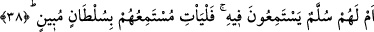
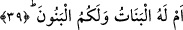

edilmiştir.
38. Yoksa onların, üzerine çıkıp gizli sırları dinledikleri bir merdivenleri mi var?
Öyleyse dinleyenleri, açık bir delil getirsinler.
“Yoksa onların, üzerine çıkıp gizli sırları dinledikleri bir merdivenleri mi var?”
Râgıb “süllem” kelimesinin, kendisiyle yüksek yerlere ulaşılan ve selâmet ümid edilen
şey anlamına geldiğini daha sonra da bu kelimenin sebep/vesile gibi bir mânâya gelen
ve kendisiyle yüksek olan her şeye ulaşılabilen merdiven anlamında kullanıldığını
belirtmiştir.
İbn Şeyh bu âyetin burda gelmesine sebep olarak şöyle demiştir: Allah müşriklerin
tekzib ve inkârlarını üzerine binâ ettiği kuruntularının tümünü mantıkî ihtimalleriyle yok
etmesinin akabinde onlara sâdece kendisi tarafından olan bir müşâhede ve dinlemeyi
bâki bırakmıştır ki bu da en âşikâr bir imkânsızlık ve bir nevi onlarla alay etme
metodudur. Ve bu sebeple “onların bir merdivenleri mi var ki dinliyorlar?” buyurmuştur.
“Dinliyorlar” kelimesine “yükselme” mânâsını katmak için onu “fî” harf-i cerri ile
kullanmıştır. Mânâ, “onlar, bu merdivende çıkma/yükselme hâlinde iken dinlerler”
şeklindedir. “Dinliyorlar” fiilinin mefûlu mahzuf olup, “meleklerin sözlerini” ve
“meleklere vahyedilenleri” takdirindedir. Yâni onlar meleklerin sözlerine ve onlara
vahyedilen ğayb ilmine kulak verirler ki kendi kafalarından zannî olarak düzdükleri ve
boş heveslerini bağladıkları istikbâle dâir haberlere tam vâkıf olabilsinler.
Keşfu’l-esrâr’da belirtildiğine göre fîhideki “fî” harf-i cerri, fî cuzî’n-nahl/hurma
dallarına (Tâhâ 20/71) âyetinde olduğu gibi alâ mânâsında kullanılmıştır..
“Öyleyse dinleyenleri açık bir delil getirsinler.”Bunu yapabilmeleri gerekir. Yâni
onu dinlediğini onaylayan ve Peygamber’i âciz bırakacak açık bir hüccet getirsinler.
39. Yoksa kızlar O’nun, oğullar da sizin mi?
Bu ifâde; onların kerih gördükleri kızları Allah Teâlâ’ya vermeleri husûsundaki bir
ayıplama, veya onları zelîl kılmaya mâtûfen akıllarına hitab eden ince bir mesaj, yahut
da bu gibi fikirde olanların, kendi kuvvetiyle âlem-i melekût ve gaybî sırlara muttali
olmaya terakki etme şöyle dursun, akıllı insanlardan bile nerdeyse sayılamayacağını
bildirmedir.
Bu nedenle her kim yaradanını kendi hoşlanmadığı şeyi O’na verme sûretiyle